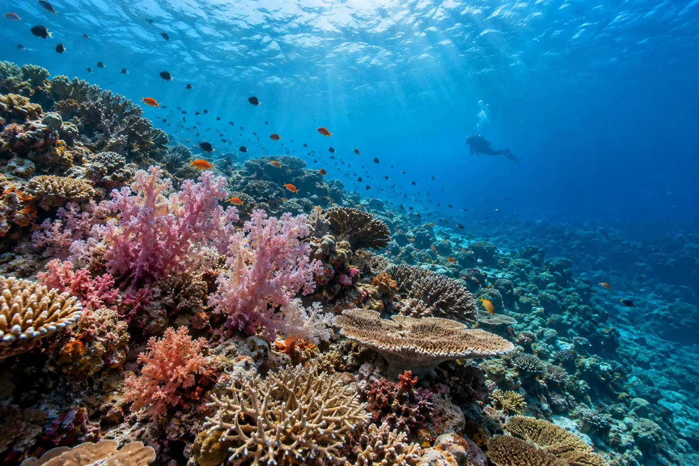

Rainbow Reef
Taveuni, Fidji · plongée, snorkeling

Récif aux coraux mous multicolores, dont le célèbre Great White Wall. La capitale mondiale du corail mou.
- Lieu
- Taveuni, Fidji
- Niveau
- Intermédiaire
- Activités
- plongée, snorkeling
- Type d'eau
- Mer / océan
- Coordonnées
- -16.90, -179.95 (position approximative du secteur)
Dangers à connaître
- Courants forts.
- Corail fragile.
Le conseil d'Ocean Buddy
Plonge avec le courant entrant pour voir les coraux ouverts.
Ouvrir dans Ocean Buddy Télécharger sur l'App Store
Source : Fiche Ocean Buddy · septembre 2026 · à vérifier localement.